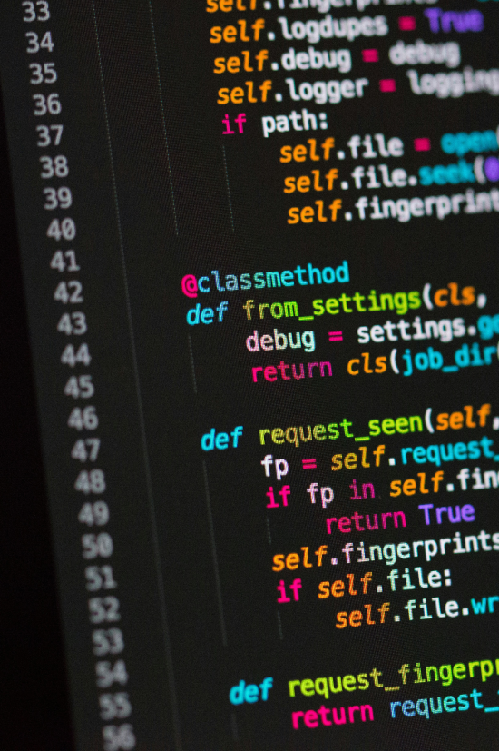
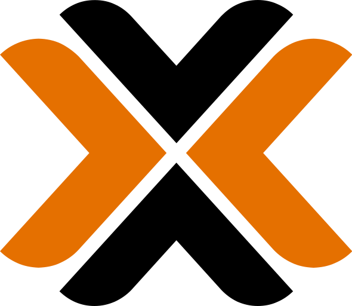
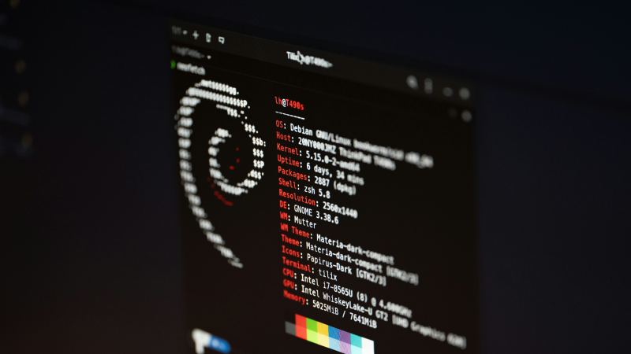

Arquitetando a continuidade de operações críticas
Virtualização e gestão de servidores Linux. Transformo infraestruturas complexas em ambientes estáveis, resilientes e de alta disponibilidade.

Sobre Mim
Transformo infraestrutura em performance. No NOC da New Life Fibra, sou responsável pelo ciclo completo de projetos: do planejamento à implementação. Especialista em virtualização e gestão de servidores linux, foco meu trabalho na criação de ambientes resilientes e flexíveis. Minha missão é garantir a continuidade dos serviços através de uma abordagem técnica rigorosa, proatividade e foco em eficiência operacional.
Comprometido com a alta disponibilidade e a evolução contínua da rede.
Minhas Habilidades

ProxmoxExperiência em Implementações
Projetos reais executados com rigor técnico e foco em estabilidade operacional.
Rede Wi-Fi de alta performance
Implantação de Wi-Fi profissional com roaming contínuo e gestão centralizada para ambientes de grande fluxo.
Redes FTTX
Projeto e manutenção de infraestrutura de redes para provedores de internet, com foco em desempenho e estabilidade.
Rede Wireless
Estabelecimento de conectividade de rádio de longo alcance para áreas remotas com alta confiabilidade.

Gestão de Servidores Linux
Administração de ecossistemas críticos, monitoramento e automação de serviços em ambientes produtivos.
Gestão de Helpdesk
Implementação e customização de sistema para organização e gestão de processos internos.
Gestão de Banco SQL
Configuração, manutenção e otimização de queries e backups seguros de bases de dados relacionais.
Projetos em Destaque
Sistemas e ferramentas desenvolvidas para otimizar operações e garantir a segurança de dados.
Mimic Backup
Uma solução robusta de automação para backup de roteadores corporativos. Desenvolvido para garantir que informações críticas de infraestrutura estejam sempre seguras e disponíveis, com logs detalhados e alertas em tempo real.


IP6 Network Tools
Toolkit especializado para gestão e diagnóstico de redes. Facilita o monitoramento de performance e a identificação de falhas em pilhas de rede modernas, otimizando o trabalho do NOC.
Catalogo do ISP
Sistema completo para catalogação de ativos e documentação técnica para provedores de internet. Centraliza informações críticas de rede e equipamentos em uma interface intuitiva.